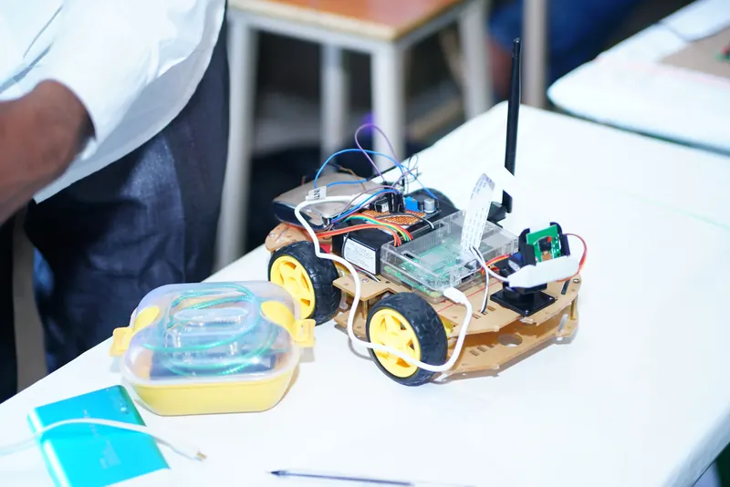
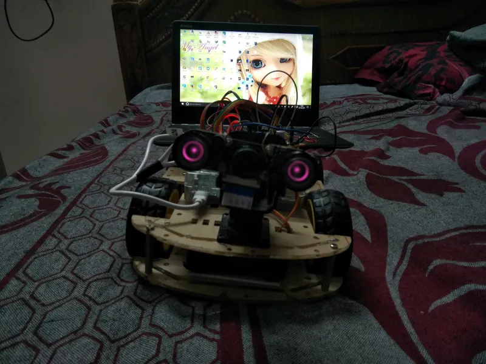
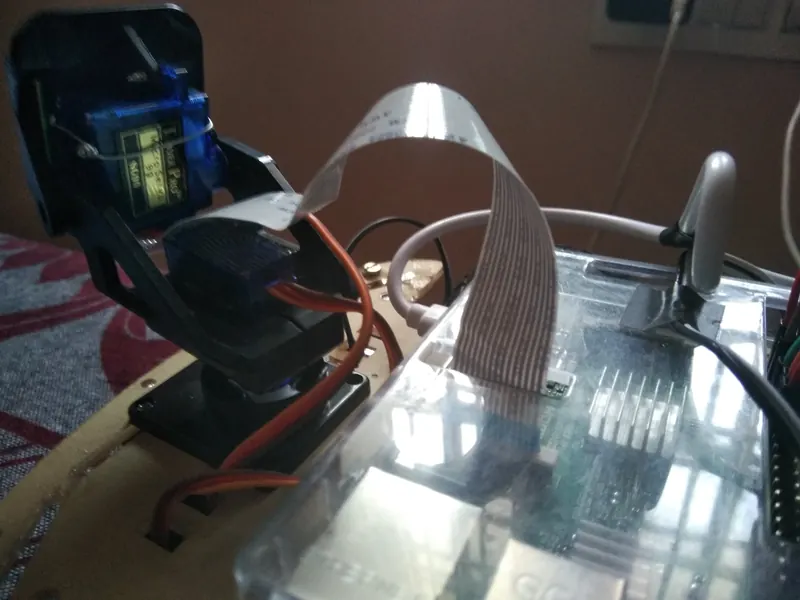
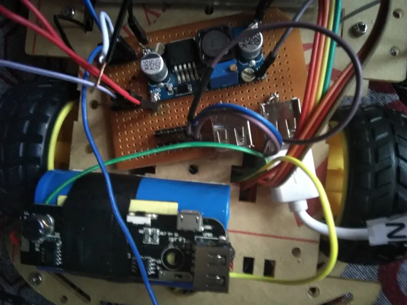
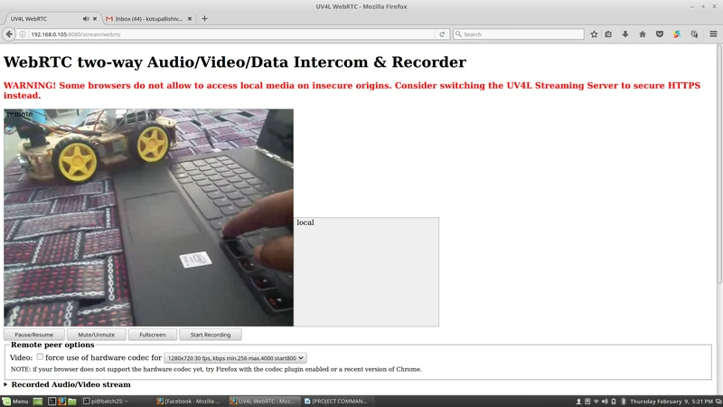
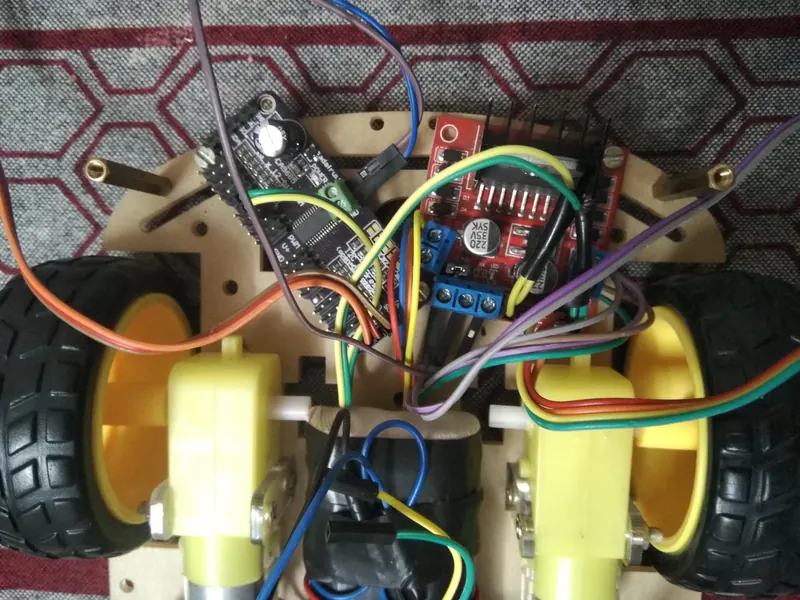
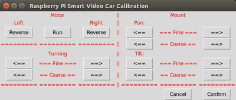

U9 · B.Tech mini project
Night Vision Rover
A Raspberry Pi rover driven from a Python program over the network, with an infrared camera on a two-axis servo mount for low-light surveillance.

What it does
A Raspberry Pi rover driven over the network from a Python program on a PC — drive commands, camera angle and lighting all across the same link. The infrared camera is the point: it works in the dark.
Camera orientation is two servos, horizontal and vertical, commanded through an I²C controller so the Pi isn't bit-banging servo pulses while also streaming video.
What it led to
Commands arrive over Wi-Fi, get parsed, and dispatch to separate modules for motion, lighting and camera angle. Keeping those apart rather than in one loop is what made it maintainable enough to keep extending.
The camera mount and the command-parsing approach both carried straight into the final-year rover.
Gallery





